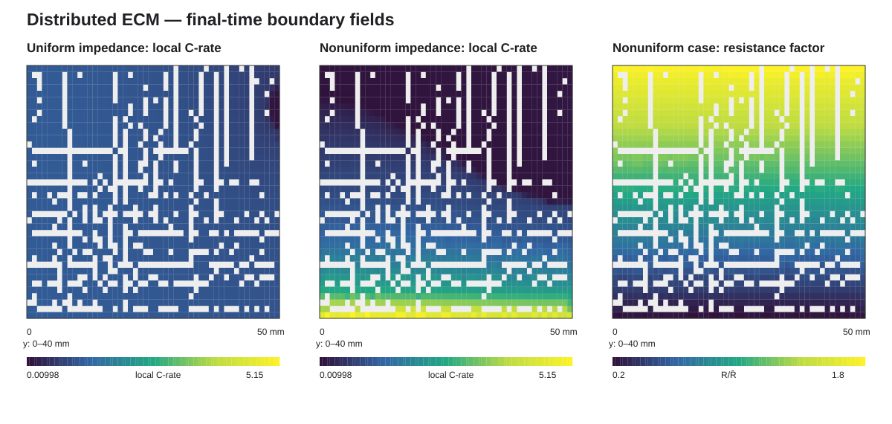

1. 执行摘要
模型已经从原先不稳定的电压状态方程重构为可收敛的分布式 ECM：
Boundary ODE 逐点推进平面电芯层的 SOCb，三维铝、铜集流体由
Electric Currents 求解，二者通过面积比阻抗形式的 Robin 电流—电压关系耦合。
最终结论：阻抗因子从 0.2 到 1.8 的线性非均匀分布，使 500 s
时电流变异系数从 0.1401 增加到 1.0849（约 7.75 倍），局部峰值倍率从
1.125 C 增加到 5.153 C，并使局部 SOC 范围扩大到 0.0016–0.7699。
非均匀/均匀电流 CV
7.745×
非均匀峰值局部倍率
5.153 C
端电压变化
+0.1186 V
2. 模型与工况
2.1 多尺度降阶结构
- 电芯层：降阶为三维结构中的二维界面（boundary 9）。
- 状态演化：Boundary ODE 求解局部无量纲状态
SOCb。 - 集流体：铝、铜域使用 Electric Currents 求解三维电势和电流。
- 跨层映射：线性挤出算子在两个集流体界面之间映射电势与电流。
局部状态方程为：
∂SOCb/∂t = Crate,loc / 3600 s
稳定后的电芯界面关系为：
n·J = (Vupper − Vlower − OCV(SOCb)) / Rarea
R_area 包含空间欧姆阻抗和在 1C 工作点线性化的活化阻抗。
该降阶版本将浓差过电位设为零，不再求解颗粒扩散。
2.2 对比工况
| 参数 | 均匀阻抗 | 非均匀阻抗 |
|---|---|---|
| 额定容量 | 60 Ah | |
| 施加电流 | 60 A（1C） | |
| 仿真时间 | 0–500 s | |
| 负载爬升 | 1 s | |
| 阻抗非均匀幅值 | 0 | 0.8 |
| 空间阻抗因子 | 1.0 | 0.2–1.8，沿 y 线性变化 |
| 铝电导率 | 3.77×107 S/m | |
| 铜电导率 | 5.998×107 S/m | |
3. 调试与模型重构
| 问题 | 诊断 | 处理结果 |
|---|---|---|
| Java 类名与文件名不一致、Windows 模型路径 | 远端编译及运行环境不兼容 | 统一为 distributeECM，模型路径改为当前工作目录 |
| 初值不一致、首步非线性失败 | 电流瞬时加载和电势初值不一致 | 加入 1 s 线性负载爬升，并设置集流体 OCV 初值 |
| 端电压出现约 ±30 kV 假解 | 局部电压 V2 被错误地作为动态状态积分，代数约束未被正确执行 |
移除动态电压状态，Boundary ODE 仅推进 SOCb |
| 电流依赖的电势强约束导致矩阵奇异 | 边界反力电流用于同一强 Dirichlet 约束，形成病态 DAE | 改为面积比阻抗 Robin 界面关系，时间推进稳定 |
| 1200 s 时局部 SOC 超出 OCV 表范围 | 强阻抗非均匀性导致约 5–6C 热点，长期外推不再物理可信 | 拒绝 1200 s 结果，最终比较窗口设为 500 s |
1200 s 诊断任务在数值上收敛，但非均匀算例局部 SOC 最大值约 1.97，
已超出 OCV 插值的 [0,1] 有效范围，因此被明确标记为
不接受，不用于最终结论。
4. 最终结果
| 500 s 指标 | 均匀阻抗 | 非均匀阻抗 | 解释 |
|---|---|---|---|
| 积分边界电流 | 60.000003 A | 60.000000 A | 与施加的 60 A 一致 |
| 电流守恒相对误差 | 4.44×10−8 | 4.61×10−9 | 远低于 10−6 |
| 平均局部倍率 | 1.00054 C | 1.03770 C | 非均匀工况存在局部反向/低电流区，绝对值平均略高 |
| 最小/最大局部倍率 | 0.00272 / 1.12538 C | 0.00005 / 5.15255 C | 非均匀阻抗产生强热点 |
| 电流变异系数 | 0.14008 | 1.08489 | 提高约 7.745 倍 |
| 端电压 | 3.00499 V | 3.12363 V | 变化 +0.11864 V |
| 平均层电压 | 2.67421 V | 2.77510 V | 包含 SOC/OCV 空间分化影响 |
| 平均 SOC | 0.13885 | 0.14516 | 均保持在 OCV 表范围内 |
| 局部 SOC 范围 | 0.00664–0.15838 | 0.00159–0.76993 | 非均匀工况离散度显著增大 |


4.1 结果解释
- 即使阻抗完全均匀，集流体片内电阻和极耳位置仍会产生一定电流不均匀性，因此均匀算例的电流 CV 不为零。
- 阻抗因子 0.2–1.8 引入后，低阻区域获得远高于平均值的电流，局部峰值超过 5C。
- 局部倍率差异随时间累积为显著 SOC 分化；这说明仅观察总电流或平均 SOC 会掩盖局部老化与安全风险。
- 端电压差异同时受到局部阻抗、集流体压降以及 SOC—OCV 空间反馈影响，不能只解释为单一串联电阻变化。
5. 数值验证与可复现性
| 检查项 | 结果 |
|---|---|
| Slurm 最终作业 | COMPLETED，作业号 38126，退出码 0:0 |
| COMSOL 时间推进 | Time-stepping completed；两算例各约 49 s |
| 模型产物 | 均匀 39,770,114 bytes；非均匀 39,770,278 bytes |
| SHA-256 | solved MPH、built MPH、全局 CSV、场 CSV 与远端清单一致 |
| 电流守恒 | 两算例相对误差均小于 10−6 |
| SOC 有效范围 | 最终两算例均满足 0 ≤ SOC ≤ 1 |
| 本地后处理 | Python 编译通过；JSON 指标均有限；SVG XML 解析通过 |
最终模型源码 SHA-256：
5eb46c10f7e85376c7beff610d531dea1b2d46c242cdeda71f9d73d2f3c26797
6. 模型适用范围与局限
- 当前是降阶分布式 ECM，不包含完整多孔电极、电解液传质或颗粒扩散。
- 浓差过电位设为零；活化阻抗在 1C 工作点线性化。因此超过数 C 的局部热点更适合用于识别风险区域，而非精确预测高倍率极化。
- 阻抗非均匀幅值 0.8 是强对比诊断工况，并非来自特定实测电芯的标定结果。
- 极值可能受网格角点和极耳边缘影响；工程判断应同时参考电流 CV、空间图和面积平均值。
- 若需模拟更长时间，应增加 SOC 上下限事件、重新标定阻抗随 SOC 的关系，或恢复稳定的颗粒/浓差动态模型。